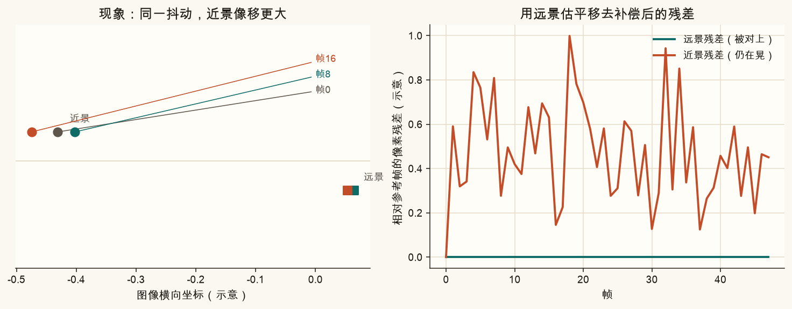
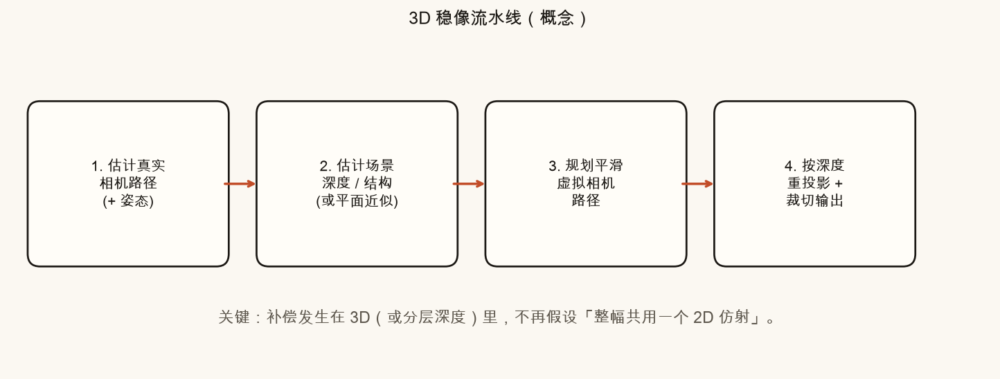
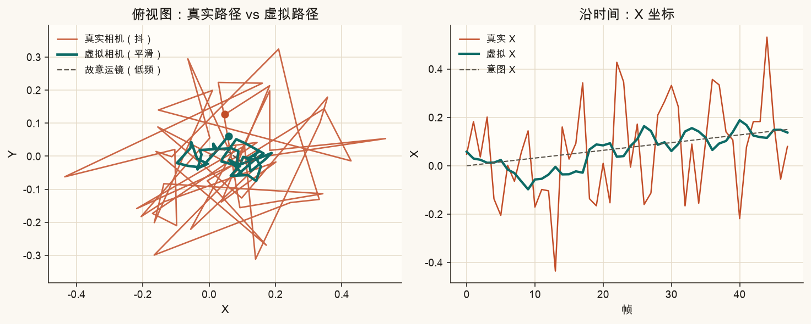
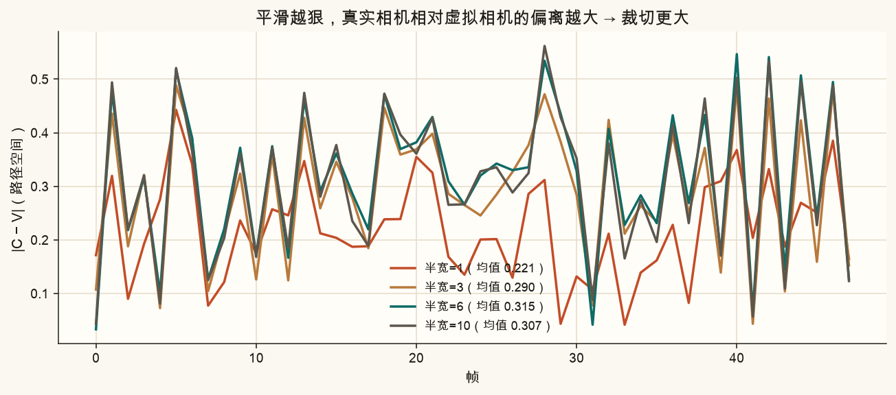
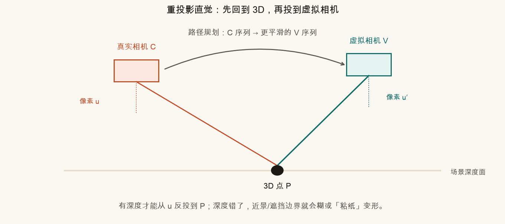
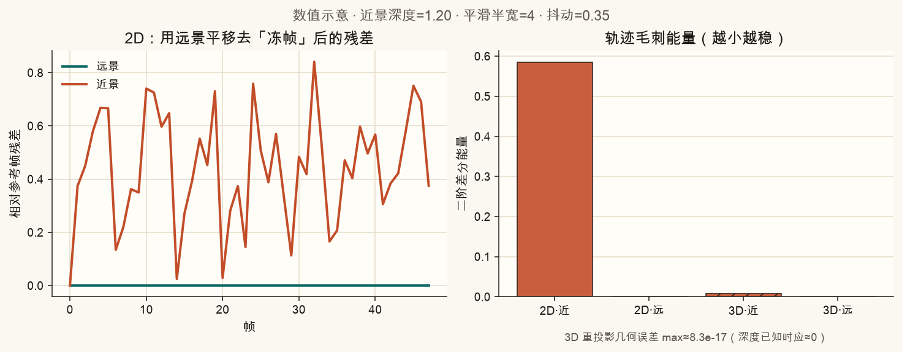
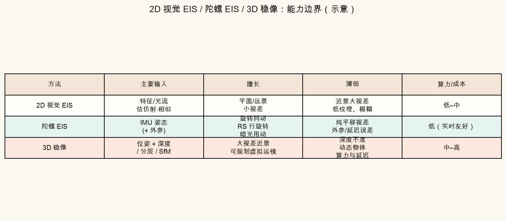

第 24 篇 · 3D 路径 · 约 55 分钟
手持视频里，远处大楼和近处栏杆「晃的幅度不一样」。二维仿射只能给整幅图套同一张「纸皮变换」，大视差时就会顾此失彼。本篇换思路：先在三维里估真实相机怎么走，再规划一条更稳的虚拟相机路径，最后按深度把像素重新投影过去。
先回忆生活场景：坐在行驶的公交上往窗外看——近处的电线杆飞快往后闪，远处的山几乎不动。相机也一样：相机平移一点点，近处物体在画面里挪得更多，远处挪得更少。这种「近大远小的相对位移差」就叫视差。
第 19–20 篇常见的二维视觉防抖，大致是：
warp 每一帧，再裁掉黑边。隐含假设是：画面上大多数像素，共用同一套 2D 变换就够了。远景、近似平面墙、或抖动以「小旋转」为主时，这个假设经常成立。一旦前景很近、背景很远，并且相机有明显平移，近景和远景需要的补偿量就不一样——一张仿射矩阵无法同时稳住两者。

白话：2D 稳像像给整张照片贴一张「会扭的透明纸」，整张纸一起挪。3D 视差问题像桌上有近处杯子和远处窗户——杯子晃的幅度不同，一张纸盖不住。
单应性（第 3 篇）比仿射强一点，但仍假设「场景近似一个平面」。近处栏杆 + 远处大楼，不是一个平面，单个 H 同样会撕裂或糊边。
不要问「这一帧像素该整体平移多少」，而问：
真实相机走了一条抖抖的路 → 我希望当时站在一条更稳的路上拍 → 按深度把内容「搬」到那条虚拟路上再成像。
所以核心物件有三个：
C(t)：每帧的位置（以及姿态），通常由视觉里程计 / SLAM / IMU+视觉估计；V(t)：你「希望当时相机该怎么走」——通常是 C(t) 的平滑版，并尽量保留故意运镜。输出视频 = 每一帧内容从 C(t) 看到的样子，重投影成从 V(t) 看的样子。观感上：抖没了，但跟拍、横移这些低频意图还在。

逐步拆开（仍保持零基础）：
最朴素、也最适合入门的做法：对位置（以及姿态角）做滑动平均或低通滤波。
V(t) ≈ 平均( C(t−w) … C(t+w) )
这里 w 就是「平滑半宽」：窗口越大，路径越黏、越稳，但：
|C(t) − V(t)| 变大 → 重投影需要「借用」更大邻域的像素 → 黑边风险上升 → 只好裁得更狠，有效分辨率下降。

产品级路径优化还会加约束：不要穿墙、不要让关键主体滑出取景、旋转用球面插值、以及「只压高频、保中低频运镜」的能量项。本篇用滑动平均，只为让你看见「虚拟路径」这个旋钮。
针孔相机极简模型（只抓直觉）：
u = f · (X − c) / Z
白话：三维点相对相机的横向偏移，除以深度，再乘焦距，得到像素坐标。深度 Z 越小，同样的相机平移会带来越大的 u 变化——这就是图 24-1 的数学来源。
已知某一帧在真实相机下的像素 u 和深度 Z，可以反推三维点，再投到虚拟相机：
X = c + u · Z / f
u′ = f · (X − v) / Z
其中 c、v 分别是真实 / 虚拟相机位置。深度对了，近景和远景会各自得到正确的 u′；深度错了，物体会「粘纸」变形或出现裂缝。


三种常见电子稳像，不要互相替代理解，而是看各自假设：

选型口诀：远景小抖 → 2D；旋转/RS 为主 → 陀螺；近景大视差还要电影感运镜 → 才值得上 3D（或至少「前景一层 + 背景一层」的伪 3D）。
下面画一条「真实相机 X 坐标」和「虚拟相机 X 坐标」，并显示近/远景在 2D 冻帧后的残差对比。拖动滑块，观察三件事：
source .venv/bin/activate # 若尚未激活
MPLCONFIGDIR=/tmp/mpl-cache python code/ch24_stabilize_3d.py会写出 ch24_parallax_fail.png、ch24_pipeline.png、ch24_virtual_path.png、ch24_reproject.png、ch24_capability.png、ch24_numeric.png、ch24_crop_tradeoff.png，以及你的 ch24_my_virtual_path.png、ch24_my_numeric.png。终端应打印「自检通过」。
打开 code/ch24_stabilize_3d.py 顶部：
# ===== 改这里 =====
SHAKE_AMP = 0.35
SMOOTH_HALF = 4
NEAR_DEPTH = 1.2
# ==================NEAR_DEPTH 改成 3.5（近景没那么近），再跑：2D 近景残差应明显变小——说明视差变弱时 2D 又勉强能用。SMOOTH_HALF 改成 10：看 ch24_my_virtual_path.png 虚拟曲线更黏，同时回想裁切代价。SHAKE_AMP 改成 0.05：几乎不抖时，2D/3D 差别缩小——算法差距要在「难例」上才明显。SMOOTH_HALF = 0：虚拟路径=真实路径，相当于「不稳像」；脚本自检里也覆盖了这个边界。相机平移时近远景像移不同（视差）。一张仿射只能表达一种整体挪动，对齐远景就会让近景继续晃（或反过来）。
它是你希望当时相机应该走的平滑轨迹。输出视频按这条路径重新成像，从而去掉真实路径上的高频抖动，同时可保留低频运镜。
陀螺擅长测旋转；纯平移造成的视差需要深度信息才能正确补偿近远景。没有深度，只靠旋转模型无法处理大视差平移。
故意运镜被抹平；真实相机相对虚拟相机偏离变大，边缘更容易空缺，只好加大裁切，有效画幅变小。
像素被放到错误的三维位置再投回去，近景/遮挡边界容易出现变形、裂缝或「粘纸」感，有时比轻微残抖更难看。
下一篇进入视频拼接：多路视频不能只复制静态流水线——时间同步、变换平滑、接缝时序稳定，否则会出现闪烁和「缝在跳舞」。